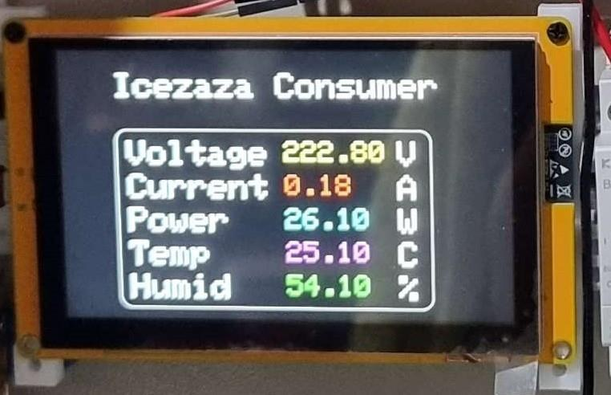
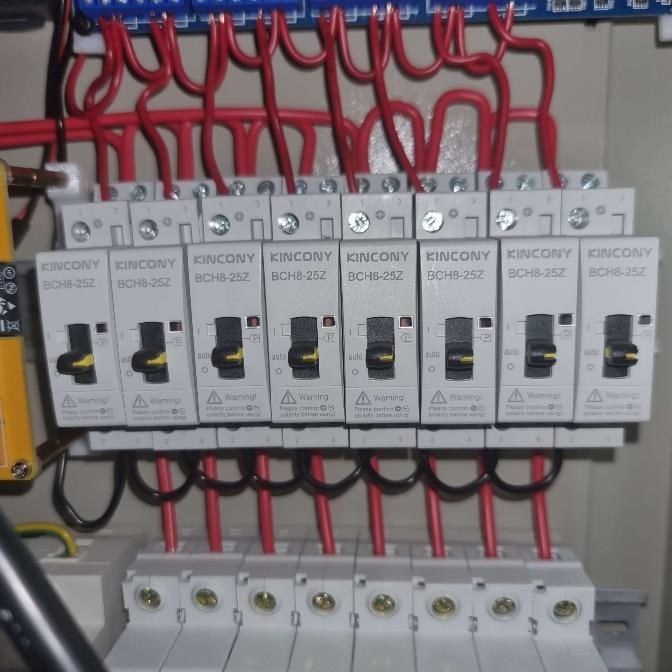

UNDERGRADUATE RESEARCH · MARCH 2023
Smart Consumer Unit
An eight-circuit electrical cabinet with remote switching, an on-panel display, and a dashboard for electrical and environmental readings.
Try switching a circuit ↓
Operate the cabinet
Simulation · Toggle a circuit to see its contactor state change.
From the web to the cabinet
Switch a circuit
Dashboard → Firebase → ESP32 → relay and contactor.
See measurements
PZEM and DHT22 → ESP8266 → Firebase → dashboard and ESP32-S3 display.

RECORDED ON THE PROTOTYPE · 19–21 & 24 MARCH 2023
Sensor history
Loading recorded readings…